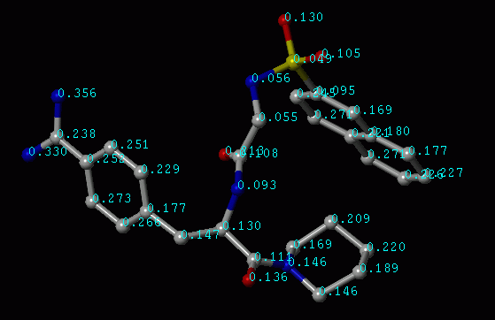

The basic function of X-Score is to compute the binding score of a given ligand molecule (or multiple ligand molecules) to a target protein. All of the parameters needed to run X-Score are assembled in an input parameter file (click here to view an example). You are supposed to edit this file to meet your own purpose.
To run X-Score, simply use this file as input:
xscore input_parameter_file
The very first parameter in the input parameter file is FUNCTION, which should be set as "SCORE". This tells the program to perform X-Score computation. You are not supposed to change this. Other parameters specified in the input file will be explained below. You can find an example input file under the "bin/" and the "c++/" directory.
Note that all of the lines started with a "#" sign in the input file will be considered as a comment line and is neglected by the program.
2. Parameters for setting input files
The first few parameters in the parameter file defines the input structural files. X-Score needs the three-dimensional structure of the given protein-ligand complex to calculate its binding constant. The structure could be either experimentally determined or modeled by a docking program. Since most today's molecular docking programs keep the protein structure rigid while docking the ligand molecules, for the sake of efficient computation, X-Score requires the protein and the ligand molecules to be stored in two separate files. The protein is required to be stored in a PDB file, and the ligand molecules should be stored in a Mol2 file.
The parameter RECEPTOR_PDB_FILE specifies the path and the name of the PDB file that stores the protein molecule. To prepare this PDB file: (1) Remove any ligand molecule or other organic cofactors. (2) If a metal ion resides in the binding site and is believed to be important for ligand binding, keep it as part of the protein. X-Score considers this kind of metal ions explicitly in computation. According to PDB convention, a metal ion should be described by a line started by "HETATM". (3) For water molecules, you may keep them in the PDB file (also in the HETATM section). However, X-Score will not consider them in computation. (4) Remember to add hydrogen atoms. X-Score only needs polar hydrogen atoms on the protein in computation. But adding all of the hydrogen atoms (polar and non-polar) will not hurt.
Started from version 1.2, an additional utility, "FixPDB", has been implemented in X-Score to help users to prepare the input PDB file correctly. Once you have finished the basic editing work described in the previous paragraph, please use this utility to further process your PDB file. Detailed description of the FixPDB utility is given on the next page.
The parameter LIGAND_MOL2_FILE specifies the path and the name of the Mol2 file that stores the structures of the ligand molecules to be scored. One thing should be kept in mind is: the ligand molecules must be pre-docked into the binding pocket of the target protein. X-Score will not do docking for you --- it only calculates the binding scores of given protein-ligand complexes. Also, please make sure that the docked ligand molecules are saved in the same coordinate system as the protein molecule.
Since the Mol2 format is defined by Tripos, naturally we recommend SYBYL for preparing all Mol2 files. Other molecular modeling software may support the Mol2 format as well. There are also some programs, such as Babel, which are designed for converting different formats. However, our experience is that such conversion is not always flawless. To prepare the ligand molecules correctly: (1) Please try your best to correctly set the atom types and bond types according to the Tripos conventions. (2) All hydrogen atoms (polar and non-polar) need to be added to the ligand molecules. (3) Atomic charges are not necessary for X-Score computation. (4) If there are multiple ligand molecules, all of them should be packed one after one in one file. This is often referred as a "multiple" Mol2 file. Since handling a very large file will probably slow down your computer significantly, we do not recommend to pack too many molecules in one file. A generally acceptable ceiling is 100,000 molecules (typically several hundred MB in size). If you have to process more molecules, you may want to break them into several Mol2 files and run X-Score respectively for each of them .
Started from version 1.2, an additional utility, "FixMol2", has been implemented in X-Score to help users to prepare their Mol2 files correctly. Once you have finished the basic editing work described in the previous paragraph, please use this utility to further process your Mol2 files. Detailed description of the FixMol2 utility is given on the next page.
An additional parameter added in version 1.2 is REFERENCE_MOL2_FILE. It specifies a ligand molecule bound to the protein. This molecule will be used as a reference to define the binding pocket. All of the residues within 10 angstrom from any part of this molecule are defined as pocket residues and will be considered in scoring. If you already know any experimental complex structure of the protein you are studying, using the ligand observed in that structure as this reference molecule is a good idea. Or you can dock a proper molecule into the binding pocket on the protein, and make sure it occupies all the important parts of the binding pocket.
Note that REFERENCE_MOL2_FILE is optional. If you do not want to set a reference molecule, you may set this parameter as "none" or comment out this line by putting a "#" sign as the first letter on that line. In such cases, X-Score will use the first molecule saved in the LIGAND_MOL2_FILE for defining binding pocket. Of course the downside of this approach is that it may not define the binding pocket as precisely as the one using a proper reference molecule.
Another parameter is COFACTOR_MOL2_FILE. Sometimes there is an organic cofactor bound together with the ligand molecule inside the binding pocket, such as CoA, NADH, and etc., and you may want to keep it at its place when computing binding affinities of the ligand molecules. In X-Score. you are allowed to supply such a cofactor molecule as part of the protein. Since this kind of cofactors are usually not formed by any standard building blocks, the PDB format is not proper for them. For instead, you can save the cofactor molecule in Mol2 format and specify its path and name with the COFACTOR_MOL2_FILE parameter in the input file. Please follow the instructions mentioned above to prepare this Mol2 file correctly. Also, make sure that this cofactor molecule shares the same coordinate system as the protein and the ligand molecules.
COFACTOR_MOL2_FILE is also optional. You may set it as "none" or comment out that line if you do not want to supply a cofactor molecule. Finally, we would like to point out that, although there is no evidence that it cannot, X-Score was not originally calibrated to compute the binding affinity of a given ligand when a cofactor molecule exists. Applying X-Score to such cases is up to your own choice.
3. Parameters for setting output files
The next few parameters defines the output files that stores the results of X-Score computation. The basic output is defined by the OUTPUT_TABLE_FILE parameter, which specifies a file tabulating the results of each scored ligand molecule (click here to view an example). The first line of this table is a title line. Every following line contains the information of one ligand molecule The meaning of each column is:
The 1st column: rank of the ligand. All the ligand molecules are ranked in a decreasing order by their average binding affinities;
The 2nd column: molecular formula;
The 3rd column: molecular weight;
The 4th column: LogP value;
The 5th column: binding affinity given by HPScore (in pKd units);
The 6th column: binding affinity given by HMScore (in pKd units);
The 7th column: binding affinity given by HSScore (in pKd units);
The 8th column: average binding affinity (in pKd units) from all of the enabled scoring functions;
The last column: name of the molecule, as extracted from the Mol2 file;
This table is a standard space-parsed text file, you can use any spreadsheet program, such as Excel, to load this table. Note that the format of this table has changed a little bit from the previous versions of X-Score.
X-Score also allows you to extract the best-ranked ligand molecules and save each of them in a separate Mol2 file for further analysis. The next two parameters in the input file are designed for this purpose:
A newly added option in version 1.2 is OUTPUT_LOG_FILE, which lists detailed scoring information for all of the top ligand molecules that have been selected and extracted (click here to view an example). For each molecule, it (1) gives general properties such as name, formula, and molecular weight; (2) lists in a table the contribution of each atom to each term in each scoring function and the binding scores dissected onto each atom; and (3) gives the overall binding scores of the molecule and scoring functions enabled in scoring. This log file greatly helps the users to interpret the structure-affinity relationships of the scored molecules.
Note that OUTPUT_LOG_FILE is also optional. If you set OUTPUT_LOG_FILE as "none" or simply comment out that line, X-Score will not create this file.
Another parameter for interpreting results is SHOW_ATOM_BIND_SCORE. It may be set to "YES" or "NO". If it is set to "YES", the program will write atomic binding scores as atomic partial charges in the Mol2 file for each of the top ligand molecules that have been selected and extracted. Thus you can view them directly in a graphics software, such as Sybyl, by displaying atomic charges. This method offers a more vivid way for inspecting the structure-affinity relationships of the scored molecules.

Illustration of Atomic Binding Score (in pKd units)
4. Parameters for setting scoring functions
As we have mentioned in the Introduction section, there are three scoring functions implemented in X-Score, i.e. HPScore, HMScore, and HSScore. You can find three switches in the input file, i.e. APPLY_HPSCORE, APPLY_HMSCORE, and APPLY_HSSCORE. You may set any of them as "YES" or "NO" to enable the scoring function you like in computation. If more than one scoring function are enabled, X-Score will adopt the consensus scoring strategy and rank all of the ligand molecules according to their average binding scores. If all of the three scoring functions are switched on, typically X-Score can process ~10,000 molecules per hour on an SGI Octane2/R12000/360MHz workstation.
All of the three scoring functions were calibrated with a large set of protein-ligand complexes with known binding constants. In X-Score, there are a default set of coefficients (weight factors) for each term in each scoring function, which were derived from regression. Started from version 1.2, the users are allowed to set those weight factors themselves. For the HPScore function, the weight factors for van der Waals interaction (VDW), hydrogen bonding (HB), hydrophobic interaction (HP), and frozen rotor (RT) are set by HPSCORE_CVDW, HPSCORE_CHB, HPSCORE_CHP, and HPSCORE_CRT, respectively. HPSCORE_C0 is a regression constant. Similarly, for the HMScore function, the five weight factors are set by HMSCORE_CVDW, HMSCORE_CHB, HMSCORE_CHM, HMSCORE_CRT, and HMSCORE_C0; while for the HSSCore function, the five weight factors are set by HSSCORE_CVDW, HSSCORE_CHB, HSSCORE_CHS, HSSCORE_CRT, and HSSCORE_C0.
These newly added parameters give the users the greatest flexibility in applying X-Score. The users are now able to emphasize or underscore certain types of interactions between the protein and the ligand molecules, which may lead to better structure-affinity correlation of the ligand molecules under study. For example, you may "knock out" certain terms by setting their weight factors to zero.
Note that: (1) all of the coefficient should be in pKd units. (2) Positive coefficients indicate favorable contributions to the overall binding affinity; while negative coefficients indicate unfavorable contributions. (3) If you do not want to set any of the above parameters by yourself, please comment out those lines by putting a "#" as the first letter. In this case, you may not set them to "0" or "none" because it is misleading. If you do not set coefficients by yourself, X-Score will use the default values.
5. Parameters for setting chemical rules
One of the major applications of X-Score is virtual library screening. Beside ranking all of the candidate molecules according to their binding scores, X-Score allows the users to pre-screening the given molecules with some molecular properties, including molecular weight, octanol-water partition coefficient (logP), and number of H-bond donor and acceptor atoms. This is also well known as "Lipinski rules" for drug-likeness judgment in the area of drug discovery. Many studies have suggested that, by applying such chemical rules, false positives observed in virtual screening can be effectively reduced.
There are seven parameters in the input file to set such chemical rules:
A general-purposed set of these chemical rules could be: molecular weight between 200 to 600; LogP between 1 and 6; Number of H-bonding atoms below 8. Here, the logP values are calculated by using the XLOGP2 algorithm.
Note that if you have chosen "YES" for
6. The shortcut to run X-Score
The standard way for running X-Score, which has been described above, is suitable for scoring multiple ligand molecules against a given target protein. This is typically seen in a virtual library screening application. Sometimes the user just wants to score one (or some) ligand molecule against its target protein and get a quick feedback of its binding score. X-Score provides a shortcut for this purpose (the synopsis is a little different from the previous versions of X-Score: a flag of "-score" is required now):
xscore -score the_protein_PDB_file the_ligand_Mol2_file
If a cofactor molecule exists:
xscore -score the_protein_PDB_file the_cofactor_Mol2_file the_ligand_Mol2_file
In such cases, the following parameters are automatically set by the program as:
APPLY_HPSCORE = YES
The results will be printed on the screen. The input ligand Mol2 file may contain single or multiple molecules. Upon the completeness of computation, a log file, named as "xscore.log", will be created under your working directory recording detailed scoring information of each scored molecule.
[Content] [Introduction] [Download] [Installation] [Usage] [Utilities] [Trouble Shooting] [References]